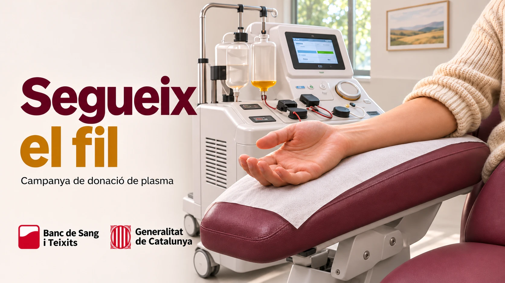
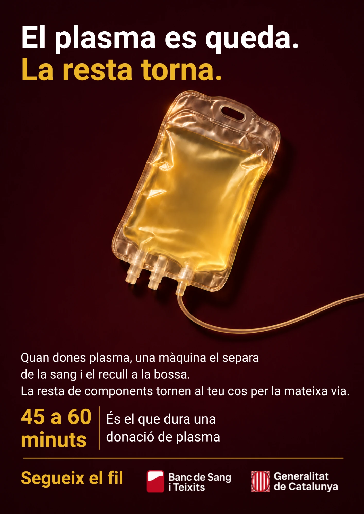
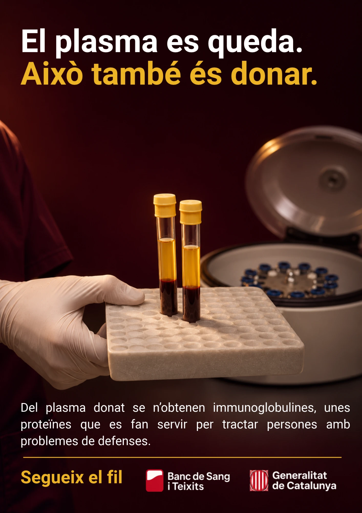
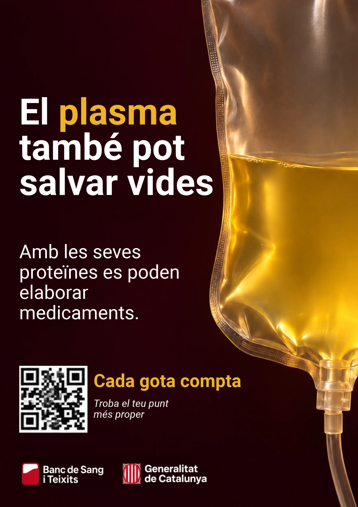
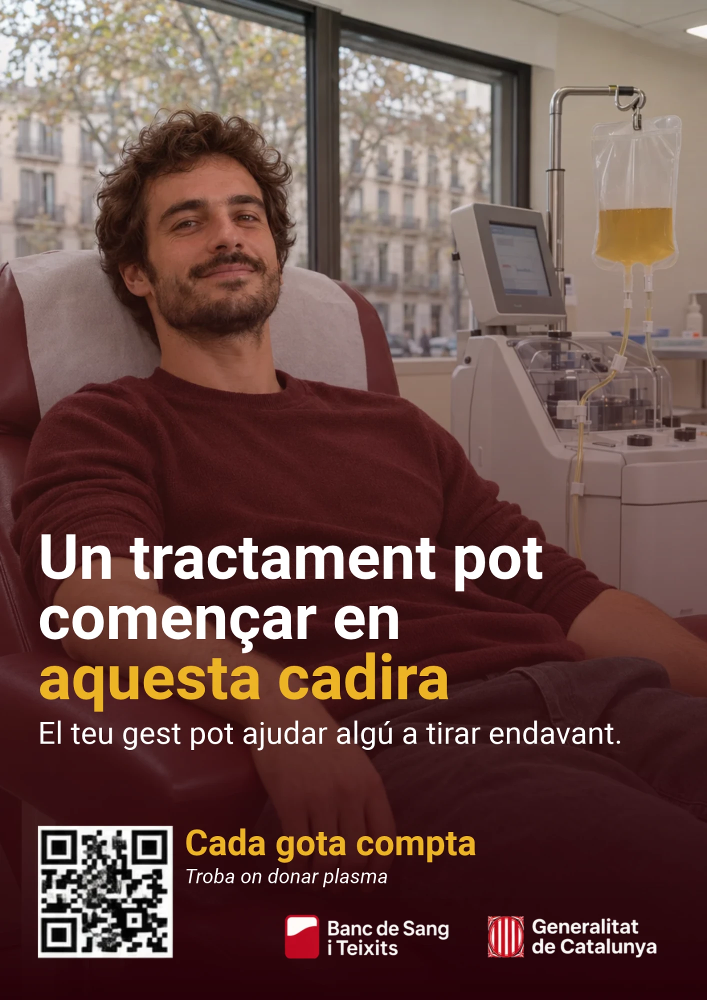

La campaña
«Segueix el fil»
Sigue el hilo
El nombre invita a seguir el proceso de la extracción de plasma de principio a fin. Cada pieza explica un paso: la máquina separa el plasma, la bolsa lo recoge y el resto vuelve al cuerpo del donante.

Campaña conceptual · Banc de Sang i Teixits
Segueix el filSigue el hilo
Una campaña de donación de plasma que explica, paso a paso, cómo se extrae: del brazo del donante a la bolsa, y de la bolsa al tratamiento.
En resumen
01 · El punto de partida
El plasma es la parte líquida de la sangre, y también se puede donar. Pero casi nadie lo tiene en la cabeza: la imagen de la donación sigue siendo una bolsa roja.
La campaña parte de ahí. Si enseñamos lo que nadie espera, la pregunta llega sola: ¿qué es esto?
Datos: Banc de Sang i Teixits, bancsang.net
02 · La idea
La campaña
«Segueix el fil»
Sigue el hilo
El nombre invita a seguir el proceso de la extracción de plasma de principio a fin. Cada pieza explica un paso: la máquina separa el plasma, la bolsa lo recoge y el resto vuelve al cuerpo del donante.
El mensaje
«Això també és donar»
Esto también es donar
Dentro de la campaña, dos carteles se dedican a recordar que el plasma también se dona. Cuando pensamos en donar, pensamos en sangre; esta frase amplía la idea.
El hilo explica cómo funciona; la frase recuerda que esto también es donar.
03 · Piezas
Todos comparten la luz oscura y el amarillo del plasma, pero cada pareja tiene una función distinta: unos explican el proceso y otros piden el gesto.
Imágenes generadas con IA · Mensajes y textos de creación propia
«Segueix el fil»
Sigue el hilo
Explican el proceso: qué pasa con el plasma desde que sale del brazo hasta que se convierte en tratamiento. Firman con «Segueix el fil».


«Cada gota compta»
Cada gota cuenta
Invitan a dar el paso: muestran a quién ayuda la donación e incluyen un código QR para encontrar dónde donar. Firman con «Cada gota compta».


04 · Dirección de arte
Segueix el fil.
Sigue el hilo.
Campaña conceptual realizada como ejercicio de portfolio, no encargada ni aprobada por el Banc de Sang i Teixits. Los logotipos pertenecen a sus propietarios. Los datos sobre el plasma proceden de bancsang.net. Las imágenes de la campaña están generadas con inteligencia artificial; los mensajes, el concepto y los textos son de creación propia.